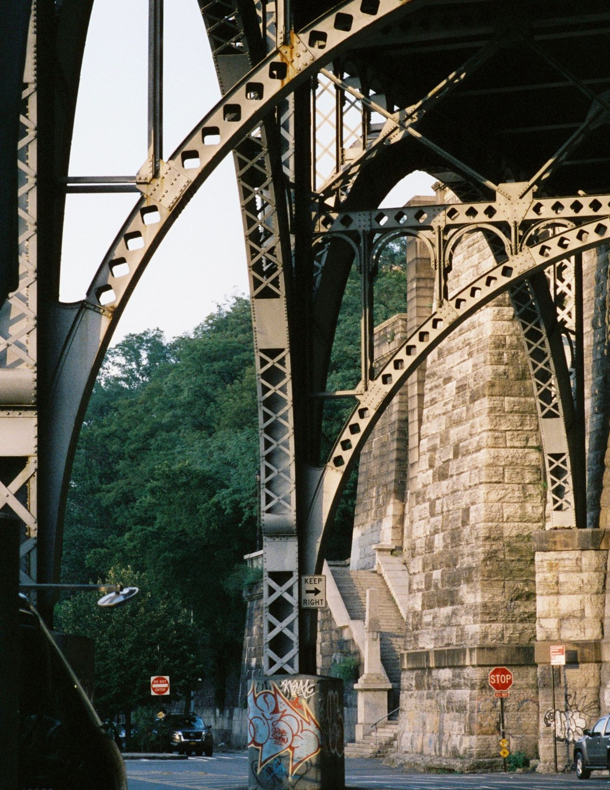

Courthouse Mini
$75
A short portrait session after your ceremony.
- 20 minutes
- 5 edited digital photographs
- Private digital delivery
ORLANDO, FLORIDA · FILM + DIGITAL
The quiet in between. The people passing through. Photographs that make you look a little longer.
Explore the photographsPHOTOGRAPHED BY OMAAR ANTONIO

SELECTED WORK / 01
People, places, and small interruptions.
An ongoing photographic series.
Click a photograph to take a closer look. Descriptive captions accompany the series.
THE APPROACH
Some photographs belong
on a screen.
Some deserve a place
in your hands.
PORTRAITS / CENTRAL FLORIDA
Short courthouse portraits, with room for the real moments. Digital photographs to share. A film keepsake to hold onto.
Introductory session offers. Dates and locations confirmed by inquiry.
$75
A short portrait session after your ceremony.
$125
A little more time, and a photograph to keep.
$175
Your day, with the character of black-and-white film.
$250
More of the day. More of the two of you.
Sessions focus on portraits. Ceremony coverage depends on venue permission and your booking. Digital delivery target: 5 business days.
*Handmade prints are offered subject to darkroom availability, confirmed before booking. Print delivery target: 2–3 weeks after image selection. Prints are unframed. Any applicable tax, shipping, or additional travel is quoted before booking.
PRINTED BY HAND
Black-and-white silver-gelatin prints, exposed and developed in the darkroom. Made from your selected film photograph, one print at a time.
Print sizes and production availability confirmed by inquiry. Frames excluded.
BEHIND THE CAMERA
I’m a film photographer and actor based in Central Florida. I’m drawn to people, movement, and the way light can turn an ordinary place into something worth remembering.
My work moves between street photography and portraits. I’m also developing my darkroom practice at Valencia College—making decisions with the camera, then again with the print.
Follow the work @omaarvelous ↗LET’S MAKE SOMETHING
Send me your date, location, and what you’re imagining. We’ll work out the details together.
Opens Instagram. Inquiries and availability are confirmed personally.